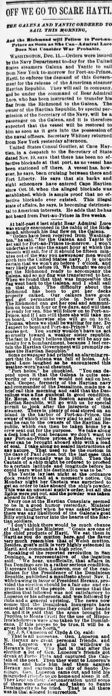
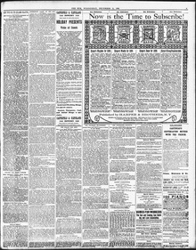

Besidos. goat's milk Is very highly esteemed in Haytl, and commandsAdemás, la leche de cabra es muy estimada en Haití, y alcanza
The Sun. New York [N.Y.], December 12, 1888. Page 5. View the originalVer el original


See the full pageVer la página completaA representative of the Legation reported that affairs in San Domingo were serious following a disputed election, an uprising by unsatisfied adherents of presidential candidate Gen. Luperon, and the seizure of arms by Dominican insurgents. Conversely, Mr. J.S. Crimin of Clyde A. Co. dismissed these reports as nonsense, explaining that the unrest merely stemmed from a group of intoxicated friends of Gen. Luperon capturing the captain of the port at Porto Plata and trying to persuade Luperon to lead them against President Heraux, an effort Luperon immediately rejected.Un funcionario de la legación manifestó que la situación en Santo Domingo revestía gravedad a consecuencia de unos comicios controvertidos, una asonada de partidarios descontentos del aspirante presidencial general Luperón y la retención de armas por sublevados dominicanos. Por el contrario, el Sr. J. S. Crimin, de la naviera Clyde & Co., desestimó tales noticias calificándolas de disparates, arguyendo que la alteración obedeció simplemente a un grupo de allegados ebrios del general Luperón que detuvieron al capitán de puerto en Puerto Plata e intentaron persuadir a Luperón para que los acaudillara contra el presidente Heureaux, intento que Luperón desechó de inmediato.
FULL TEXT:TEXTO COMPLETO:
At half-past 6 last night Rear Admiral Luce was snugly ensconced in the cabin of the Richmond, although his flag flew on the Galena.A las 6 y media de anoche el Contralmirante Luce estaba cómodamente instalado en la cabina del Richmond, aunque su bandera ondeaba en el Galena.
"Orders have been received from Washington," he said, "for the Galena and Yantic to set sail for Port-au-Prince to-morrow. I won't undertake to state the exact hour at which the vessels will sail, for if it should be fifteen minutes out of the way you newspaper men would pitch into the United States navy. It is quite certain that we won't go before 7 o'clock, and very likely not before 10. We thought we could get the Richmond ready to accompany the Galena, and so my flag was transferred to her. When we found that that was impossible the flag went back to the Galena, and I shall sail on that ship. The difficulty about the Richmond has been to get her decks properly calked. Our calkers have gone and got permanent jobs in New York. The Richmond can get her coal and ammunition on board in four or five days, and will then be ready for sea. She will follow on to Port-au-Prince, and if I am still there she will take me on board. Otherwise she will go on to St. Thomas, where we shall be waiting for her. Do I expect to bombard Port-au-Prince? Why, of course not. You surely wouldn't have us act so cruelly toward a weaker sister republic. The fact is I don't believe there will be any necessity for a bombardment, because I feel certain the Haytian Government will promptly release the Haytian Republic."«Órdenes han sido recibidas de Washington», dijo, «para que el Galena y el Yantic zarpen hacia Puerto Príncipe mañana. No me comprometeré a declarar la hora exacta a la que los buques zarparán, pues si estuviera quince minutos fuera de lugar ustedes los periodistas atacarían a la marina de los Estados Unidos. Es bastante cierto que no iremos antes de las 7, y muy probablemente no antes de las 10. Pensamos que podíamos tener el Richmond listo para acompañar al Galena, y así mi bandera fue transferida a él. Cuando encontramos que eso era imposible la bandera regresó al Galena, y zarparé en ese buque. La dificultad con el Richmond ha sido conseguir que sus cubiertas sean debidamente calafateadas. Nuestros calafates se han ido y han conseguido empleos permanentes en Nueva York. El Richmond puede tener su carbón y municiones a bordo en cuatro o cinco días, y entonces estará listo para el mar. Seguirá hacia Puerto Príncipe, y si todavía estoy allí me tomará a bordo. De otro modo seguirá a Santo Tomás, donde estaremos esperándolo. ¿Espero bombardear Puerto Príncipe? Pues, por supuesto que no. Seguramente no nos tendrían actuando tan cruelmente hacia una república hermana más débil. El hecho es que no creo que habrá ninguna necesidad de un bombardeo, porque siento certeza de que el Gobierno haitiano liberará prontamente la Haytian Republic.»
Some newspaper had printed an alarming report that the Galena was full of holes. Admiral Luce laughed as he encountered this weather-worn naval chestnut.Un periódico había impreso un informe alarmante de que el Galena estaba lleno de agujeros. El almirante Luce se rió al encontrar este gastado chascarrillo naval.
"Port holes," he chuckled. "You can depend upon it that the Galena is quite seaworthy or your uncle would not sail on her. Capt. Cooper, formerly of the Haytian navy and commander of the Dessalines, made me a brief call this morning and said that the Dessalines was a fine gunboat in good condition. Mr. Morse, one of the Boston agents of the Haytian Republic, will go with us by special permit to look after the interests of that steamer. There is plenty of coal stored on an island in the harbor of Port-au-Prince, the owner of which will be very glad to sell all the coal he can to the owners of the Haytian Republic, which can then be taken home by a crew sent out for the purpose. We take along a deck load of coal because we don't want to pay Port-au-Prince prices. Besides, yellow fever can be brought aboard ship with a load of coal. I take along no sealed instructions of any nature. That used to be the custom in the days of Paul Jones, but the last case that I know of personally was in 1853. Then the Captain of a ship might be ordered to proceed to a certain latitude and longitude before he could learn what his destination was to be."«Portillos», se rió entre dientes. «Pueden depender de que el Galena es bastante apto para navegar o su tío no zarparía en él. El capitán Cooper, antiguamente de la marina haitiana y comandante del Dessalines, me hizo una breve visita esta mañana y dijo que el Dessalines era un cañonero fino en buena condición. El Sr. Morse, uno de los agentes de Boston de la República haitiana, irá con nosotros por permiso especial para atender los intereses de ese vapor. Hay mucho carbón almacenado en una isla en el puerto de Puerto Príncipe, cuyo propietario estará muy contento de vender todo el carbón que pueda a los propietarios de la Haytian Republic, que entonces puede ser llevada a casa por una tripulación enviada para ese propósito. Llevamos una carga de cubierta de carbón porque no queremos pagar los precios de Puerto Príncipe. Además, la fiebre amarilla puede ser traída a bordo con una carga de carbón. No llevo instrucciones selladas de ninguna naturaleza. Eso solía ser la costumbre en los días de Paul Jones, pero el último caso que conozco personalmente fue en 1853. Entonces el Capitán de un buque podía ser ordenado a proceder a una cierta latitud y longitud antes de poder saber cuál había de ser su destino.»
The Yantic lay last night at the ordnance dock ready to sail at a moment's notice. On Monday night her Captain was surprised to get an order to take aboard the ship's powder. This was an unusual night's order, but all the lights were put out, and the powder was taken aboard in the dark.El Yantic estaba anoche en el muelle de artillería listo para zarpar en cualquier momento. El lunes por la noche su Capitán se sorprendió al recibir una orden de tomar a bordo el polvo del buque. Esta fue una orden nocturna inusual, pero todas las luces fueron apagadas, y el polvo fue tomado a bordo en la oscuridad.
Every one at the Haytian Consulate seemed to be in a good humor yesterday. Minister Preston laughed when he was asked whether there was any likelihood of the Galena's goat Billy striking terror into the hearts of the Haytian soldiers.Todo el mundo en el Consulado haitiano parecía estar de buen humor ayer. El Ministro Preston se rió cuando se le preguntó si había alguna probabilidad de que la cabra Billy del Galena sembrara terror en los corazones de los soldados haitianos.
"I don't think there would be much chance of that," said the Minister. "Goats are one of the chief products of Hayti. We eat them in Hayti as you do mutton here, and the flavor very much resembles that of Welsh mutton. Besides, goat's milk is very highly esteemed in Hayti, and commands a high price."«No pienso que hubiera mucha probabilidad de eso», dijo el Ministro. «Las cabras son uno de los principales productos de Haití. Las comemos en Haití como ustedes comen carnero aquí, y el sabor se parece mucho al del carnero galés. Además, la leche de cabra es muy altamente estimada en Haití, y comanda un precio alto.»
Speaking of the reported revolution in San Domingo, a representative of the legation said: "We hear, unofficially, that affairs in San Domingo are in a rather serious condition. It appears that Gen. Luperon, one of the candidates for the Presidency of the Dominican Republic, published a manifesto about Nov. 1, withdrawing in favor of President Heraux, provided the election should be a fair one and express the will of the people. It seems that the election that followed was not satisfactory to Luperon or his adherents, and was followed by riots and a general uprising. The news now comes that the Dominican insurgents have seized all the arms they could get their hands on, and it is said that the arms brought by Papillon to Monte Cristi for the use of Hippolyte's followers were also taken by the Dominicans. If this proves to be true, it will be a great blow to the North."Hablando de la reportada revolución en Santo Domingo, un representante de la legación dijo: «Escuchamos, extraoficialmente, que los asuntos en Santo Domingo están en una condición bastante seria. Parece que el general Luperon, uno de los candidatos para la Presidencia de la República Dominicana, publicó un manifiesto hacia el 1 de noviembre, retirándose en favor del presidente Heraux, siempre que la elección fuera justa y expresara la voluntad del pueblo. Parece que la elección que siguió no fue satisfactoria para Luperon ni sus adherentes, y fue seguida por disturbios y un levantamiento general. Ahora viene la noticia de que los insurgentes dominicanos se han apoderado de todas las armas que pudieron conseguir, y se dice que las armas traídas por Papillon a Monte Cristi para el uso de los seguidores de Hippolyte también fueron tomadas por los dominicanos. Si esto resulta ser cierto, será un gran golpe para el Norte.»
Mr. J. S. Cameron of Clyde & Co. said:El Sr. J. S. Cameron de Clyde & Co. dijo:
"That is all nonsense. Gen. Luperon and M. Heraux are great personal friends, and Gen. Luperon was glad to withdraw in Heraux's favor. The fact is that after the election a lot of Gen. Luperon's friends got drunk at Porto Plata and captured the Captain of the port. Then they went to Luperon's house, and bade him lead them against Heraux and capture the city of Santo Domingo. Gen. Luperon came out, and told his misguided friends to go home and sleep it off. They kept up their demonstration until some of them were arrested and taken to Santo Domingo city to be tried. That is all there was in that alleged insurrection."«Todo eso es un disparate. El general Luperon y M. Heraux son grandes amigos personales, y el general Luperon estaba contento de retirarse en favor de Heraux. El hecho es que después de la elección un grupo de amigos del general Luperon se emborracharon en Puerto Plata y capturaron al Capitán del puerto. Entonces fueron a la casa de Luperon, y le pidieron que los liderara contra Heraux y capturara la ciudad de Santo Domingo. El general Luperon salió, y les dijo a sus amigos descarriados que fueran a casa y durmieran la borrachera. Mantuvieron su demostración hasta que algunos de ellos fueron arrestados y llevados a la ciudad de Santo Domingo para ser juzgados. Eso es todo lo que hubo en esa alegada insurrección.»
[Editor's note: the paper writes of the east as part of Hayti. From 1822 to 1844 the Dominican Republic was held by Haitian military occupation, against its people's will; it restored its independence on February 27, 1844.][Nota del editor: el periódico habla del este como parte de Haití. De 1822 a 1844 la República Dominicana estuvo bajo ocupación militar haitiana, contra la voluntad de su pueblo; restauró su independencia el 27 de febrero de 1844.]